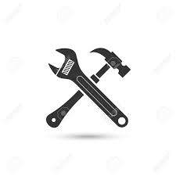
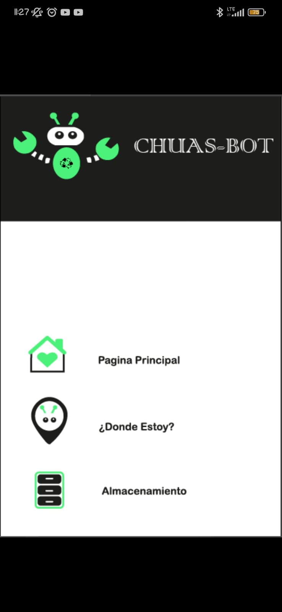
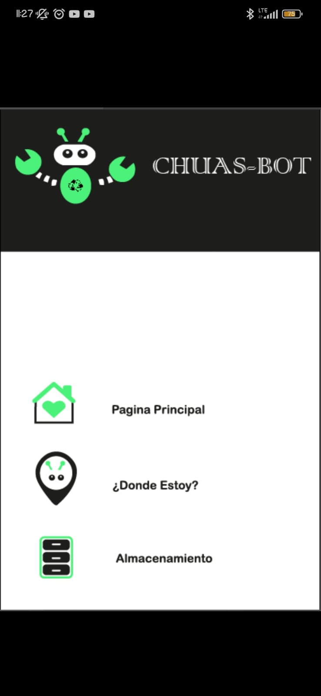

CHUAS BOT
Bienvenido!. Este proyecto es fruto de un equipo con visión y compromiso, listo para usar su poder tecnológico en favor del planeta, demostrando que pueden ir de la mano.
InformaciónBienvenido!. Este proyecto es fruto de un equipo con visión y compromiso, listo para usar su poder tecnológico en favor del planeta, demostrando que pueden ir de la mano.
Información
Prototipo de robot con un sistema de manejo intuitivo que incorpore un sistema de ventilación (con aspiradora), mejorando la eficacia y productividad en la recolección de residuos especialmente en áreas de difícil acceso, con el objetivo de optimizar el proceso de recolección de residuos accesible y fácil de usar tanto para el servicio de recolección de basura (Hormiguitas Chuas) como para usuarios particulares.
InformaciónEn Ecuador, las "hormiguitas chuas" podrían mejorar la gestión de residuos sólidos, especialmente en ciudades como Cuenca, Guayaquil y Quito. Estos robots ayudarían en zonas de difícil acceso, complementando el trabajo de los recolectores y contribuyendo a la sostenibilidad ambiental.

La recolección y el reciclaje de basura son esenciales para reducir la contaminación y preservar el planeta. El reciclaje ayuda a disminuir la demanda de materias primas, la contaminación industrial y las emisiones de gases.

En el inicio de la construcción del prototipo del robot nos basamos en la mascota de las hormigas chuas, primero realizamos un prototipo utilizando cajas de plástico y el Arduino Uno. El primer modelo nos funcionó, aunque con algunos detalles a mejorar, así que decidimos modelar la hormiga en 3D para crear un diseño más preciso y funcional. Tras esto, integramos un ESP32 para controlar mejor los sistemas del robot y lograr un funcionamiento más eficiente y versátil en diversas situaciones de recolección de residuos.
En la contruccion del prototipo, tuvimos que fijarnos bien en la parte del diseño, esto implica en el posicionamiento de los cables ya que de eso dependia el correcto funcionaimento de este,como se observa.


En la cuestion del desarrollo de la palicacion tuvimos que investigar cual conexion o tipo de bluetho nos beneficiaba mas en cuestion de conexion y recursos, asi como el enlace con los diferentes componetes, como el sensor de peso, y el modulo gps para la ubicacion de este
 

17 AOS
ESPECIALIDAD: INFORMTICA

17 AOS
ESPECIALIDAD: INFORMTICA

17 AOS
ESPECIALIDAD: MECATRNICA


Escanea este código QR para conocer cómo logramos crear a tu robot favorito